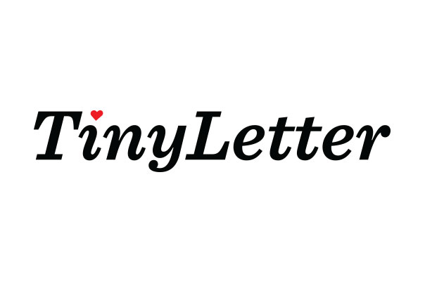

TinyLetter Redesign
TinyLetter was redesigned in the middle of 2014, after sitting untouched for several years. It was a comprehensive project, with the brand, site, and app all being brought up to date.
The initial logo for TinyLetter was created by Ron Lewis in 2011, and he acted as creative director as I worked on the logo redesign. This redesign wasn't positioned to wipe the slate clean; we just wanted to update the brand to feel less like a startup.
I focused on making the redesign a natural evolution. Italics were kept, and we deliberated on whether to keep the words separate colors.
Redesigned Logo
Redesigned Wordmark
In the end we had a subtle update that reflected the growth of the TinyLetter community.
TinyLetter Site
The site had stayed the same for ages as well. I worked on redesigning it, too, stripped back the visuals back to focus on the content.
TinyLetter App
The TinyLetter app was also completely redesigned by Caleb Andrews, and developed by Alan Crissey, Jordan Andree, and Will Castillo. They did an amazing job on a tight deadline, and they absolutely nailed it.